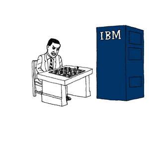
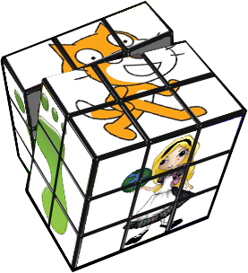

For the last couple of months (as pointed out in my latest income reports), I’ve been working vigorously on creating new iPhone apps. We currently have 4 available in iTunes, which has grossed us a total of $6798.64 during the first quarter of the year. We’re super stoked to have 8 more apps scheduled to be released in less than a month.
Since many of you (and I really do mean many!) have been emailing me and asking me for more info about creating iPhone apps, I’ll be writing more about my experience in individual blog posts, such as this one.
If you want to get into the iPhone (or iPad) app industry, here are 5 things you should know first:
Computer vision is a diverse field and its researchers have multifaceted interests and aspirations. It should not be surprising that no two vision researchers think about the field in the same way. Different academic backgrounds foster alternative and potentially incommensurable interpretations. It is as if W.V.O Quine's thesis that no observation can be "theory-independent" directly applies to vision: a researcher in computer vision cannot uphold a view on his own field that is objective and independent of their own predispositions, upbringing, and educational program. While I cannot speak clearly about the long-term goals of the entire body researchers in vision, today I would like discuss my own take on computer vision. I do not offer the world an objective account of why computer vision intrigues me, but by sharing with the world the reasons why I find vision exciting, perhaps together we can break the boundaries of machine intelligence.
The problem with chess is that it has a "finite universe problem" -- there is a finite number of primitives (the chess pieces) which can be manipulated by choosing a move from a finite set of allowable actions. But if we think of normal life (going to work, eating dinner, talking to a friend) as a game, then it is not hard to see that most everyday situations involving humans involve a sea of infinite objects (just look around and name all the different objects you can see around you!) and an equally capacious space of allowable actions (consider all the things you could with all those objects around you!). Intelligence is what allows us to cope with the complexities of the universe by focusing our attention on a limited set of relevant variables -- but the working set of objects/concepts we must consider at any single instant is chosen from a seemingly infinite set of alternatives.
Summer 1948 - the thunder rolled, the wind blew, and lightning destroyed the majestic shade tree. One limb fell and struck the sapling, introducing a stress raiser, to be exacerbated and healed repeatedly in the next few years. Several decades resulted in a beautiful shade tree under which many powerful men would seek the cool shade.
At ITiCSE 2009 and again at SIGCSE 2010, we had panel session: Comparing Alice, Greenfoot and Scratch. The session came about because all three development teams – the Scratch, Alice and Greenfoot teams – were regularly asked one question: What’s the difference? All three systems aim to let young people learn about programming. Many teachers (as well as parents or kids) have heard of more than one of them, but deciding which one to use can be difficult. While there are clear differences, the time it takes to evaluate all three of them is not trivial. The panel session turned out to be very popular. The room was packed full, and we got plenty of questions afterwards. So we decided to create a written version of this session. And it’s now available. We wrote a set of papers, which have now been published in a special issue of the ACM Transactions of Computing Education (TOCE). Each paper was written by a key member of the design team of one of the environments. The papers are more extensive and more in depth than the panel was (we all took the chance to write about various aspects our systems, which we had intended for some time, but never got around to doing), but they also aim to record some of the discussion that we had at the time.